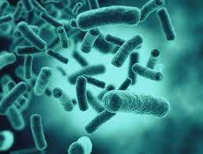
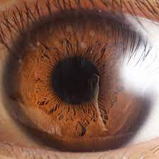
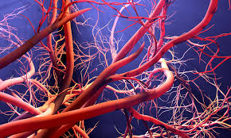
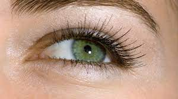
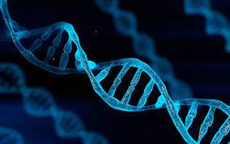
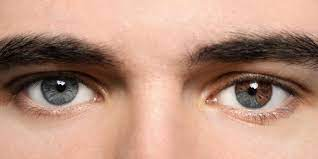
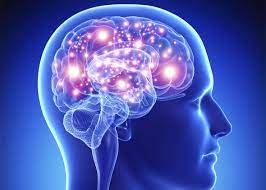

Amazing Fun Facts about Human Body
1. You Contain Trillions of Bacteria
Dr. Natalie Carter, Versus Arthritis Head of Research Engagement, said: "We have trillions of bacteria living in our bodies and helping regulate inflammation and disease.
"It has long been suggested they may affect our immune system and contribute to inflammatory arthritis, which affects over 430,000 people in the U.K.
"Versus Arthritis is funding research studying the bacteria sharing our body so we can better understand their role in the development and potential treatment of inflammatory arthritis."
2. Your Eye Is Your Fastest Muscle
Sharon Copeland, an optician at Feel Good Contacts, said the fastest-moving muscle in the human body is the orbicularis oculi, capable of contracting in less than 1/100th of a second.
She said: "A blink typically can last 100-150 milliseconds. Did you know that you blink more when talking and less when you are reading this is why you get tired when reading?
The eye is the fastest muscle in your body – which is why we say when something happens quickly, 'in the blink of an eye!
3. 100,000 Miles of Blood Vessels
Dr. Foster said: "This includes veins, arteries, and communicating little capillaries that move between both.
It seems like an unrealistic number, but if you imagine every single muscle, organ, bit of skin or nerve needs its own way of getting blood and taking it away, it's not surprising how much plumbing we need.
4. Only 2% of Humans Have Green Eyes
Copeland said: "That's right, only two percent of the population have green eyes.
"The largest concentration of green-eyed peoples is in Ireland, Scotland, and Northern Europe.
"All races, including Asian African Caucasian pacific islanders Arabic Hispanic and the indigenous peoples of the Americas, can have green eyes.
"All babies are born with blue or brown eyes. Green eyes can take between six months and three years to appear in children."
5.All Humans Are +99% Identical
Dr. Foster said: "The visual differences or internal variations that occur in us are only due to a tiny variation in genetics."
"This is also why we are so similar to many other animals – from a genetic perspective. "
6. The Skin Is Your Largest Organ
Dr. Foster said: "The skin accounts for about 15 percent of our body weight and its importance is massively under-appreciated.
"It keeps everything on the inside from coming out, but it also helps keep us at the right temperature, helps us with touch and sensation, allows us to move without restriction (not too tight or too loose), heals and regenerates constantly and much more."
7. When We breathe, We Favor One Nostril
Dr. Foster said: "We naturally tend to alternate from one nostril then the other as this helps keep the air we breathe moist so as not to irritate our lungs.
"But our bodies give one nostril a break while the other is active – we just don't know we do it."
8. We Don't Know Why We Yawn
Dr. Foster said: "Many animals seem to do it, and there are different theories as to why we do—some say it helps get more oxygen in, others think it helps regulate temperature.
"Either way, we all do it, we just don't why."
9. Eyes Remain Almost the Same Size Your Entire Life
Copeland said: "Although our nose and ears keep growing throughout our lives, our eyes remain the same size from birth.
"By three months, our eyes are the same size that they will ever be as the corneas have reached their full width."
She quotes Cornell University neurobiologist Howard C. Howland, who stated: "Human eyes grow rapidly in the womb and for the first three months after birth."
This is thought to explain why babies are so cute, with their disproportionately large eyes gazing out from those little round faces."
10. We Erase and Reform Our Memories
Dr. Foster said: "This is my favorite one. We imagine that when we remember an event or something in the past, it is like playing a recorded file in a computer.
"But actually our brain re-writes the memory each time we think of it, slowly altering it or twisting it over time.
"Therefore, the childhood memories we cherish may have actually been distorted by our brains over many years."